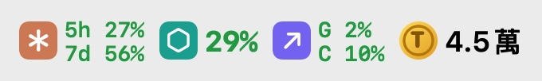
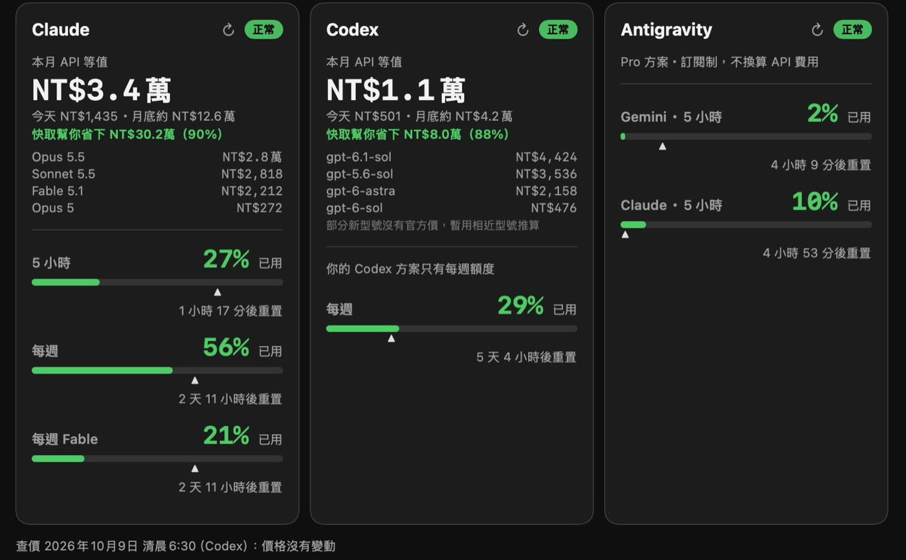

這篇在講什麼
AI 現在很多事情都做得出來，所以真正要先想的是：這件事值不值得做，要花多少成本。我自己做了一個放在 Mac 選單列的小工具 TokenMoney，一眼看到 Claude、Codex、Antigravity 三家的額度，也把 Claude 和 Codex 的每月用量換算成 API 價格的台幣。這篇講我怎麼看「值不值得做」，也把 token 怎麼計價、快取為什麼能省錢、上下文越長為什麼越貴，用白話講一次。
- 每個月付 AI 訂閱費，想知道自己到底用了多少的人
- 想把 AI 用在工作上，但不確定哪些事情值得交給 AI 的人
- 要幫客戶或公司估算 AI 成本的顧問、主管、工程師
- 一個判斷「這件事值不值得交給 AI」的商業角度
- token 計價的四種價格：一般輸入、寫快取、讀快取、輸出
- 快取和上下文長度怎麼影響帳單，我自己用的「先寫工作日誌再壓縮」做法，以及一段可以直接複製的成本估算提示詞
用量工具一直斷線，我乾脆自己做一個 Token 精算師
我同時用三家 AI：Claude、Codex、Antigravity。每一家都有自己的額度，例如 Claude 有 5 小時額度、每週額度、還有每週 Fable 額度。
之前我用別人做的選單列工具看額度，但它一直更新、一直斷線，常常點開就是連不到。
所以我自己做了一個，叫 TokenMoney。它放在 Mac 最上面那一排選單列，我把它當成我的 Token 精算師：隨時告訴我，我現在用了多少、換算成錢是多少。
這個工具目前放在我自己的私人 GitHub，只給我自己用。
AI 什麼都做得出來，先問這件事值不值得做
我覺得 AI 現在進步很快、很厲害，很多事情都做得出來。
但正因為什麼都做得出來，我們更要思考的是：這件事情值不值得做，以及做下去的成本。
用商業的角度來看其實更簡單：
這件事情值得做，AI 花 100 塊解決它，能賺 200 塊，那就做啊。
這件事情很便宜，AI 花 50 塊就解決了，但我懷疑解決完之後也沒有人會受益，那其實就是浪費。
這也是我在意 Token 效率的原因。token 是 AI 計價的單位，可以想成 AI 讀和寫的字數單位，讀得越多、寫得越多就越貴。Token 效率講的是：同一件事，能不能用比較少的 token、或比較划算的模型做完。要談效率，前提是先看得到自己花了多少。
- 想用 AI 提升效率，結果都在瞎忙？：這段講「值不值得做」，那篇講更前面一步，先把不該做的刪掉再自動化。
- AI 小工具該用便宜模型還是貴的？：Token 效率的另一半，同一份考卷怎麼比出哪個模型最划算。
我的 Token 精算師 TokenMoney，在選單列上顯示哪些數字
選單列：三家額度一眼看完

- 每家一個小圖示，旁邊是額度用了幾 %
- Claude：5 小時、每週、每週 Fable
- Codex：每週
- Antigravity：Gemini 5 小時、Claude 5 小時
- 未滿 75% 是綠色，到 75% 變黃色，到 90% 變紅色
- 最右邊是一個錢幣加 T 的圖示，後面是 Claude 和 Codex 這個月換算成 API 的台幣合計（Antigravity 只看額度，不算金額）
- 要出現哪些項目可以自己勾選
點開面板：配速箭頭和台幣金額

- 三家卡片可以切換水平並排、垂直排列、分頁切換，也可以用 －／＋ 放大縮小
- 每個額度是一條進度條，上面有一個小箭頭。箭頭標的是「照時間平均，現在應該用到哪裡」。進度條比箭頭短，代表我用少了；比箭頭長，代表我用多了
- Claude 和 Codex 的卡片寫本月 API 等值、今天、照目前速度到月底大約多少、按模型拆分的金額、快取省了多少
- 每張卡可以各自更新；斷線時每小時自動重新連線一次，也可以按按鈕手動重連
Token 換成台幣，要拆成四種價格來算
每一次 AI 回覆，帳單上其實有四種 token，各有各的價格：
- 一般輸入：這一輪送給 AI、沒有用到快取的內容
- 寫快取：第一次把內容存進快取，比一般輸入貴一點
- 讀快取：之後重複用到同一段內容，從快取讀，便宜很多
- 輸出：AI 寫出來的內容，通常是最貴的
TokenMoney 讀的是我電腦裡 Claude Code 和 Codex 自己留下的對話紀錄，紀錄裡分開記著這幾種 token 的數量，再乘上那個型號的單價。紀錄缺欄位就當 0；官方查不到價格的型號（例如 Codex 的 codex-auto-review），先借相近型號的價格推算，並在卡片上標出「推算」。
還有兩個細節：
- 每一段用量，用當時的價格算。模型會降價、會改價，過去的用量照我記下的過去價格算，不會因為今天改價就回頭改掉。
- 匯率先固定用 1 美元換 32 台幣。
10 月 1 日到 9 日早上 8 點，我的 API 等值是：Claude 約 NT$34,337，Codex 約 NT$11,623。Claude 那邊，Opus 5.5 就佔了約 NT$29,018。這些數字一直在累積，幾分鐘後再看就會多一點。
- gpt-image-2.5 生一張圖多少錢？：同樣是把 token 帳單攤開算，那篇算的是生圖。
- 我想在官網放 AI 客服，API 是什麼、會不會很貴？：如果你是真的要改用 API 按量付費，先看這篇的儲值、金鑰與模型怎麼選。
快取是什麼，為什麼九天就省了約 30 萬台幣
這是做這個工具時，我覺得最值得講清楚的一段。
AI 本身不會記得前面的對話。你每傳一句話，Claude Code、Codex 這類工具通常會把前面的對話、系統說明、讀進來的檔案內容一起再送給 AI 一次。對話越長，每一輪重送的東西就越多。
快取（英文叫 prompt caching，提示詞快取）就是把這一大包重複的前段先存起來。下一輪只要前段一樣，就直接從快取讀，價格只算原本的一小部分。
Claude 這邊的倍率，以一般輸入的價格為 1 倍來算：
| 動作 | 價格倍率 |
|---|---|
| 寫進快取，存 5 分鐘 | 1.25 倍 |
| 寫進快取，存 1 小時 | 2 倍 |
| 從快取讀（多數型號） | 0.1 倍，也就是一成價錢 |
| 從快取讀（Opus 5.5、Sonnet 5.5） | 0.05 倍 |
| 從快取讀（Fable 5.1） | 0.025 倍 |
所以快取是先多付一點存起來，之後每次讀都大幅便宜。
TokenMoney 會另外算一個數字：假設完全沒有快取，所有內容都用一般輸入的價格，API 等值會是多少。兩個數字相減，就是快取幫我省下的錢。這兩個都是 API 等值，我實際付的還是訂閱費。
10 月 1 日到 9 日：
- Claude：假設沒有快取約 NT$34 萬，有快取約 NT$3.4 萬，省了約 NT$30.6 萬（90%）
- Codex：省了約 NT$8.4 萬（88%）
看到這個數字我才真的有感：如果沒有快取，我平常這種長對話、讀一大堆檔案的工作方式，API 等值會是現在的十倍左右。
對話塞得越長，每一輪就越貴
上下文長度，就是每一輪送給 AI 的那一整包內容有多長。
前面說過，每一輪通常都要重送前面的內容。所以就算有快取，對話越長，每一輪要處理的 token 還是越多，這一輪的費用就越高。
有些模型還會在上下文超過一定長度後，整個換一個比較貴的價格：
- Codex：單次輸入超過 27.2 萬 token，輸入變 2 倍、輸出變 1.5 倍
- Haiku 5.5：超過 10 萬 token，改用比較高的那一段價格
另外還有一個常被忽略的開關：Claude 的 fast 模式（快速模式）是 2 倍價格。
我的解法：告一段落先寫工作日誌，再壓縮上下文
知道了快取和上下文長度怎麼算錢，我自己的做法有兩個。
每告一個段落，先寫工作日誌，再壓縮上下文
壓縮上下文，是讓 AI 把前面整段對話濃縮成一份摘要，之後的對話只帶著這份摘要往下走。對話變短，每一輪要重送的 token 就變少。
那為什麼不直接壓縮，還要先寫工作日誌？
檔案放在哪、為什麼這樣決定、還有什麼沒做完，這些細節可能在濃縮時被省略掉。摘要也只活在這一個對話裡。
換一個新對話、換一台電腦、交給另一家 AI，都讀得到做到哪、卡在哪、下一步是什麼。
所以順序是固定的：先把做到哪、卡在哪、下一步寫進工作日誌存檔，再壓縮。
閒置 55 分鐘，自動寫工作日誌再壓縮
快取存 1 小時。對話閒置超過 1 小時，快取就過期，回來講第一句話時，前面整段對話要用原價重新送一次。
所以我用 Claude Code Mod 寫了一個自動機制：每一輪對話結束後，如果閒置到第 55 分鐘還沒有新訊息，它就自動叫 AI 先把工作日誌和續接卡寫好存檔，寫完再壓縮上下文。這時候快取還在，壓縮時讀前面的對話還是用快取價。
這兩個做法怎麼用 Claude Code Mod 做出來，我之後會另外寫一篇。
- 用 AI 整理個案紀錄，個資會直接送出去嗎？：介紹的個資防護盾也是一個 Claude Code Mod，可以看看 Mod 還能做哪些事。
- Codex 整個大當機？重安裝後第一步先檢查 logs_2.sqlite：那篇也講到，靠工作日誌讓任務心血不會跟著工具故障一起不見。
價格會變，所以每天讓 AI 去查官方價目表
AI 模型更新很快，價格也會變，新模型一直出來。手動維護價目表一定會漏。
所以 TokenMoney 每天自動查一次價：
程式抓 Anthropic 和 OpenAI 兩個官方定價頁面的文字。
交給 Codex 的 gpt-6-luna 模型，把頁面上的價格抄成數字，約 15 秒。
每個欄位都是合理數字才收；跟目前價目表比對，有新模型就跳 Mac 通知。
這一步交給 AI 時，網頁是我的程式先抓好的。我在提示詞裡要它不要使用任何工具，只照我給它的頁面文字抄，執行時也只開唯讀權限。
修正後加了兩道防護：
- 已經在價目表裡的型號，價格一次變動超過 3 倍，先擋下不寫入，跳通知讓我自己看
- 自動記下來的改價，一律標「未確認」，寫入前也會自動備份
TokenMoney 哪些數字穩，哪些可能會斷
| 資料 | 從哪裡來 | 穩定度 |
|---|---|---|
| API 等值金額 | 我電腦裡的紀錄檔 | 穩 |
| Codex 額度 | Codex 自己寫在紀錄檔裡的數字 | 穩 |
| Claude 額度 | Claude Code 登入後去問 Anthropic 的非公開網址 | 官方一改就可能斷 |
| Antigravity 額度 | Antigravity 在我電腦上開的內部介面 | 改版就可能斷 |
斷線時會保留上一次的數字，並標出是幾分鐘前的資料。
所以這是我自己用的工具，目前不公開、也沒有對外提供下載。
不用裝工具，也能先估算一件事的 AI 成本值不值得
你不需要 TokenMoney，也可以用同樣的想法先估一次。把下面這段貼給你常用的 AI，換掉括號裡的內容：
最後一題最重要。算出來 50 塊，如果做完沒有人受益，那 50 塊也是浪費；算出來 100 塊，能幫你賺回 200 塊，那就做。
這個小工具是我自己研發、自己用的
如果你也有興趣，或是想一起聊聊怎麼估算 AI 成本、判斷一件事值不值得交給 AI，歡迎到 LINE 社群跟我說。
我每月固定舉辦兩場免費線上講座，分享 AI × 知識管理的實戰經驗。